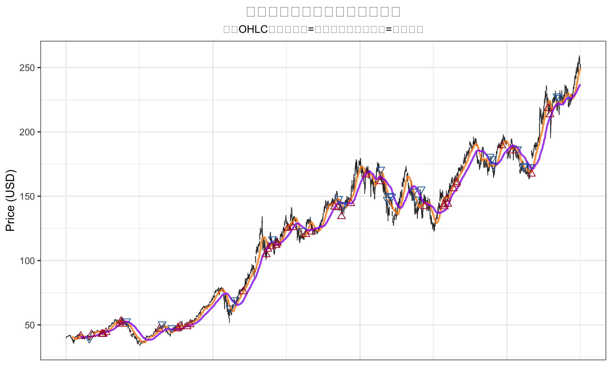
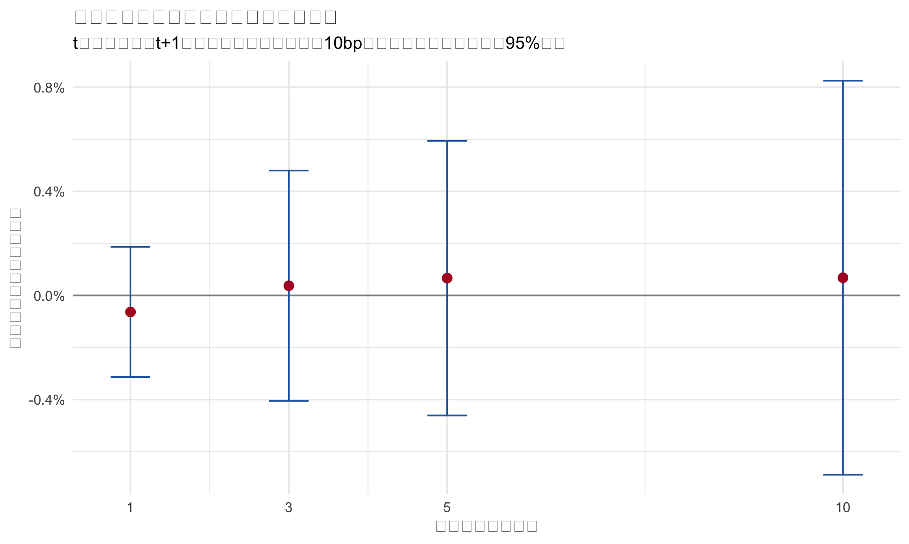

从形态到可运行研究：综合案例
问题现场
前18章提供了许多候选变量。最危险的综合方式是把表现好的条件不断叠加，直到历史曲线漂亮。本章反过来：先冻结评分、时点、成本和样本切分，再查看结果；如果结果不支持策略，就保留失败结论。
学习目标
- 把数据、形态、环境、信号和执行串成完整证据链；
- 预先划分开发期与检验期；
- 构建透明、可解释的复合评分；
- 使用
ebacktest配置成本和成交价格； - 形成可复现研究日志与模型卡。
经典形态与市场机制
综合分析并不是“信号越多越好”，而是让不同层次回答不同问题：蜡烛形态描述局部价格拒绝或推进；趋势与位置描述上下文；动量和成交量描述状态；风险规则决定是否以及投入多少。每层只能使用当时可见的数据。
Lo、Mamaysky和Wang展示了把技术形态转化为计算算法与统计推断的研究路径 [@lo2000]。本案例沿用这一精神，但不声称单标的结果可外推到全部市场。
可计算定义
价格分数为锤子、流星、吞没、星线、孕线方向之和 \(P_t\)；趋势分数 \(T_t=\operatorname{sign}(C_t-SMA_{50,t})\)；动量分数在RSI<35时为+1、RSI>65时为-1，否则0。总分：
\[ Q_t=P_t+T_t+M_t. \]
只有 \(|Q_t|\ge2\) 且 \(P_t\ne0\) 时产生 \(s_t=\operatorname{sign}(Q_t)\)。趋势分数与反转信号可能冲突，这是设计的一部分：模型需要至少另一项证据抵消冲突。阈值2在查看检验期之前固定。
研究设计
2010—2018年为开发期，用于检查代码和合理参数范围；2019—2025年5月为时间外检验期。所有形态在收盘后形成，次日开盘执行，默认持有5日，双边10bp。对照包括买入持有、单独吞没和不含趋势/动量的形态组合。稳健性包括非重叠事件、成本5/10/25bp、阈值2/3和滚动年度结果。
本章事件研究不是完整资金曲线；ebacktest 路径用于加入目标权重、现金、最小交易单位和再平衡。任何部署结论还需跨标的面板与真实可成交约束。
R实现
panel <- lab_read_data()
features <- lab_features(panel)
signals <- lab_base_signals()
price_score <- signals$hammer + signals$shooting + signals$engulfing +
signals$star + signals$harami
trend_score <- sign(features$close - features$sma_50)
momentum_score <- ifelse(features$rsi_14 < 35, 1,
ifelse(features$rsi_14 > 65, -1, 0))
score <- price_score + trend_score + momentum_score
panel$signal <- ifelse(abs(score) >= 2 & price_score != 0, sign(score), 0)
# 信号在 t 日收盘完成，目标权重从 t+1 日开盘生效。
panel$weight <- lab_lag(panel$signal, 1)
panel$adjusted <- panel$close
config <- ebacktest::default_backtest_config() |>
ebacktest::set_weight_col("weight") |>
ebacktest::set_exec_price_col("open") |>
ebacktest::set_eval_price_col("adjusted") |>
ebacktest::set_transaction_costs(
fee_rate = 0.0003, stamp_tax = 0, slippage_rate = 0.0007
)
result_r <- ebacktest::run_backtest(config, panel)上例把信号滞后一期成为目标权重，避免回测引擎在同日开盘使用收盘后信息。实际持有5日的事件逻辑还需转成状态机权重，而不是每天覆盖。
Python实现
from python.candlestick_lab import load_data, pattern_signal
import numpy as np
from ebacktestcraft import Config, performance_analysis, run
panel = load_data()
price_score = sum(
pattern_signal(name).to_numpy()
for name in ["hammer", "shooting", "engulfing", "star", "harami"]
)
sma_50 = panel["close"].rolling(50).mean()
trend_score = np.sign(panel["close"] - sma_50)
delta = panel["close"].diff()
gain = delta.clip(lower=0).rolling(14).mean()
loss = (-delta.clip(upper=0)).rolling(14).mean()
rsi = 100 - 100 / (1 + gain / loss)
momentum_score = np.where(rsi < 35, 1, np.where(rsi > 65, -1, 0))
score = price_score + trend_score + momentum_score
signal = np.where((np.abs(score) >= 2) & (price_score != 0), np.sign(score), 0)
panel["weight"] = np.roll(signal, 1)
panel.loc[0, "weight"] = 0
panel["adjusted"] = panel["close"]
config = Config(weight_col="weight", exec_price_col="open", eval_price_col="adjusted")
result_py = run(panel, config=config)
metrics_py = performance_analysis(result_py.equity_curve)两语言必须对齐评分列、滞后、权重状态和费用。只比较最终累计收益无法定位差异。
图形诊断

图上检查评分是否在某些年份完全失效、是否过度集中在高波动期，以及空头信号在长期上涨资产上是否承担结构性逆风。
证据与稳健性
| sample | events | mean_gross | mean_net | win_rate | ci_low | ci_high |
|---|---|---|---|---|---|---|
| 全部事件 | 173 | 0.0017 | 7e-04 | 0.5318 | -0.0046 | 0.0059 |
| 非重叠事件 | 138 | 0.0019 | 9e-04 | 0.5507 | -0.0052 | 0.0071 |
| period | events | mean_net | win_rate |
|---|---|---|---|
| 开发期 | 109 | -0.0041 | 0.5046 |
| 时间外检验期 | 64 | 0.0087 | 0.5781 |

全样本点估计即使略为正，区间仍可能跨零；只有时间外时期、成本压力和相邻参数均支持，才值得扩大样本。技术规则的数据窥探问题必须显式控制 [@sullivan1999]。本书案例的合格结论可以是“尚无足够证据部署”。
AI协作实验室
AI维护研究日志：记录假设、源码版本、数据哈希、参数、运行时间和失败测试；生成R/Python中间列对照，并搜索最坏年份。约束是检验期结果首次生成后不可用于修改评分，除非开启新的研究版本和新的留出数据。验收包括数据哈希、时间切分、无未来函数测试、成本归因和完整参数表。
失效条件与常见误区
- 反复查看检验期并继续调参；
- 将信号直接作为同日开盘权重；
- 复合评分使用多个高度相关变量却当作独立证据；
- 只报告累计收益，不报告回撤、换手和成本；
- 单标的有效就外推到其他市场。
本章小结与练习
完整研究的产物不只是策略，而是一条可追溯证据链。只要时点、成本或样本外证据不合格，就应停止在“候选”阶段。失败结果是研究资产，不是需要隐藏的瑕疵。
- 复现开发期与时间外检验期表，并加入95%区间。
- 对阈值2/3、成本5/10/25bp绘制完整敏感性表。
- 将事件信号转换为严格持有5日的权重状态机，并与每日覆盖法比较。
完成本章后，你应能独立建立从冻结数据、形态检测、上下文、评分、执行、成本到样本外检验的完整流程，并能在证据不足时明确拒绝部署。